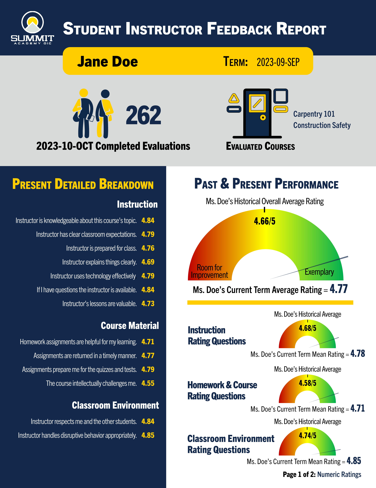

Recent Deliverables
Below are three recent data reports I've tailored for diverse stakeholders, with actual values substituted for confidentiality. While these reports provide insight into my capabilities, they merely scratch the surface of my extensive work. They lack the detailed preparatory and advanced analyses that inform their development. Moreover, they represent just a fraction of my outward-facing data and reporting deliverables, which include interactive Excel and PowerBI dashboards, web-based tools, executive summaries, and presentations. I've chosen to showcase them here as they exemplify my dedication to effectively conveying final data findings, promoting actionable insights, and because they seamlessly integrate into the website, unlike other deliverables that may not integrate as smoothly.
Intrusion Report

This is a data report template for MnDOT that I crafted during my Postdoctorate at UMN's HumanFIRST lab. It aimed to furnish MnDOT with an illustration of how to present work zone intrusion data effectively to roadway workers, providing them with crucial information to bolster their safety during work. Another goal was to promote the adoption of the recently developed Work Zone Intrusion App, an application for which I played a pivotal role in overseeing development and formation.
Demographic Report

This is an end-of-fiscal-year demographic data report distributed to all employees and key stakeholders, including board members, at Summit Academy OIC. The data was collected using SQL pulls. This report is one of several, alongside other interactive reporting tools, that are delivered to effectively communicate essential end-of-fiscal-year information.
Instuctor Report

This is an example of a student instructor evaluation report that I distribute to all Summit OIC instructors after each term, presenting the findings of their student evaluations. To compile this report, I extract primary data from SQL and use various tools I've developed to automate essential calculations and formatting. The initial creation process involved some advanced statistical analysis work, particularly in selecting question groupings and determining the appropriate gauge locations on the gauge meters.